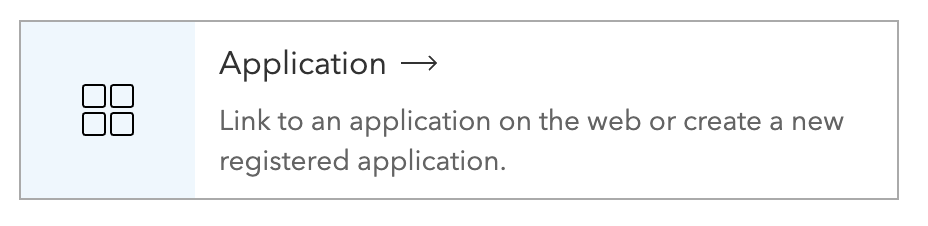
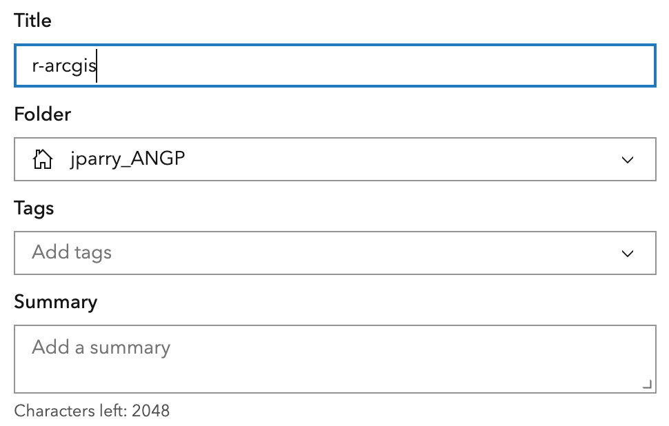
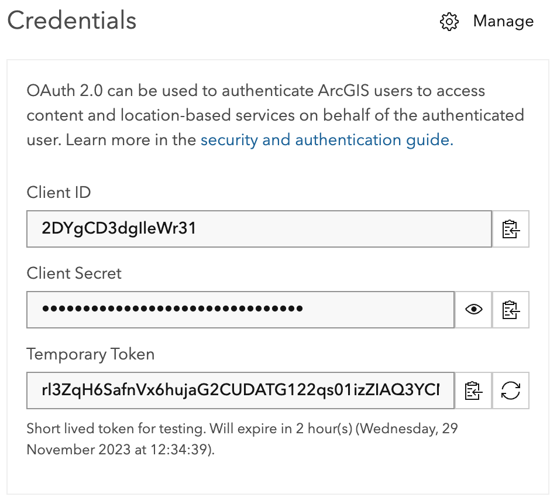

Connecting to your Portal
In order to read content items that do not have a “Public” Sharing level ( ), or to write to or modify existing content items that you are an owner of, you will need to be authorized.
), or to write to or modify existing content items that you are an owner of, you will need to be authorized.
Authorization is done using OAuth2. There are two ways to authorize with OAuth2: either by using a a code or a client flow. In most cases code based authorization is recommended.
The first step of authorizing is creating a client ID.
Obtaining a Client ID
If a client ID is not provided to you by an admin and you have the ability to create content items, you can create one.
You can do so by creating an application item.
- Log in to your ArcGIS Online or ArcGIS Enterprise organization
- Navigate to the Contents tab
- Click
New Item - Select
Application

- Choose
Other applicationas yourApplication Type - Give the item an informative name such as
r-arcgis

- You will be directed to the content page where you can see your credentials. Do not share these.

Securing your credentials
By default, packages in the {arcgis} meta-package are configured to work with ArcGIS Online. arcgis utilizes environment variables to determine how requests are crafted and where requests are made. These environment variables are:
ARCGIS_HOSTARCGIS_CLIENTARCGIS_USERARCGIS_SECRETARCGIS_TOKEN
ARCGIS_HOSTis used to to determine where authorization takes place. By default, this is"https://www.arcgis.com". This is because the packages, by default, interact with ArcGIS Online. To use a different portal, you will need to modify theARCGIS_HOSTpath to url of that portal.ARCGIS_USERvariable is used to determine who actions are performed on behalf of. Notably, it is used in functions that modify or create resource such as functions fromarcgislayers:create_service(),add_item(), andpublish_item().ARCGIS_CLIENTandARCGIS_SECRETenvironment variables are used only in theauth_client()OAuth2 client flow authorization. See the article on authorization for more.ARCGIS_TOKENis used to fetch a users access token. These are retrieved using the variousauth_functions ofarcgisutilsand set usingset_auth_token(). Alternatively, theARCGIS_TOKENcan be set to an API key.
Setting your credentials in .Renviron
Environment variables should never be included in your code. Instead, they should be stored in an external environment file such as an .Renvrion file. To modify your .Renviron run the following in your text editor
usethis::edit_r_environ().Renviron scopes
.Renviron files can be created at a user level or a project level. It is recommended to use project level .Renviron files when deploying scripts to production. If most of your work is interactive then a user level file is sufficient.
Project scoped .Renviron files store environment variables that are available for the project only. The .Renviron is stored at the root folder level.
User scoped .Renviron files store environment variables in the user’s home directory. The environment variables will be available to you in any project you open. However, if you share your project, the environment variables will not be shared with it.
You .Renviron file will now be opened for you to edit. Fill in the environment variables ARCGIS_CLIENT and ARCGIS_SECRET from the content item we just created.
ARCGIS_CLIENT=your-client-id
ARCGIS_SECRET=your-super-secret-key
ARCGIS_HOST=https://your-portal.com/
ARCGIS_USER=your-user-nameDo not put environment variable values in quotation marks.
If you are using ArcGIS Online, you do not need to set the environment variable ARCGIS_HOST.
Environment variables will not be set automatically. To register the new environment variables restart your R session.
Authorizing
First, load the library.
library(arcgis)
#> Attaching core arcgis packages:
#> - {arcgisutils} v0.1.0
#> - {arcgislayers} v0.1.0Code flow
Next run auth_code() which will open a tab in your browser. If you are authorizing to an ArcGIS Enterprise portal ensure that you set the ARCGIS_HOST environment variable correctly and that you restarted your R session.
token <- auth_code()You will be prompted to sign in to your portal.

Once you’ve signed in, copy the code that appears, and return to R. Enter the code into the console without any modifications and press enter.

Your authorization will have completed.
token
#> <httr2_token>
#> token_type: bearer
#> access_token: <REDACTED>
#> expires_at: 2023-03-03 13:21:40
#> refresh_token: <REDACTED>
#> username: your-user
#> ssl: TRUE
#> refresh_token_expires_in: 1209599We now need to set this token to the ARCGIS_SECRET environment variable. We do this with set_auth_token().
set_auth_token(token)
#> Token set to environment variable `ARCGIS_TOKEN`Client flow
Alternatively, we can authorize using the client OAuth2 flow. This will authorize the application we created and not ourselves. Because of this we cannot use the client flow to create or modify content.
The client flow has the benefit of being non-interactive, though.
token <- auth_client()
set_auth_token(token)
#> Token set to environment variable `ARCGIS_TOKEN`Using ArcGIS Pro & {arcgisbinding}
If you are a user of ArcGIS Pro and have arcgisbinding installed, you can use auth_binding() to utilize the tokens that result from arc.check_portal(). auth_binding() has the benefit of being non-interactive and authorizes you as a user. You can use auth_binding() for non-interactive work that creates or modifies existing content.
token <- auth_binding()
set_auth_token(token)
#> Token set to environment variable `ARCGIS_TOKEN`